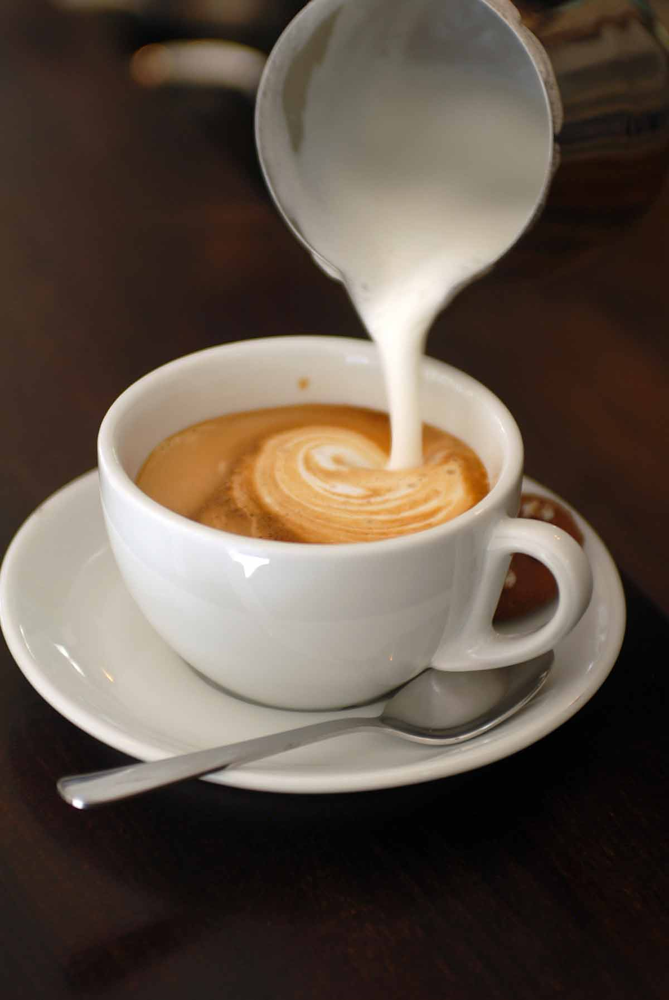
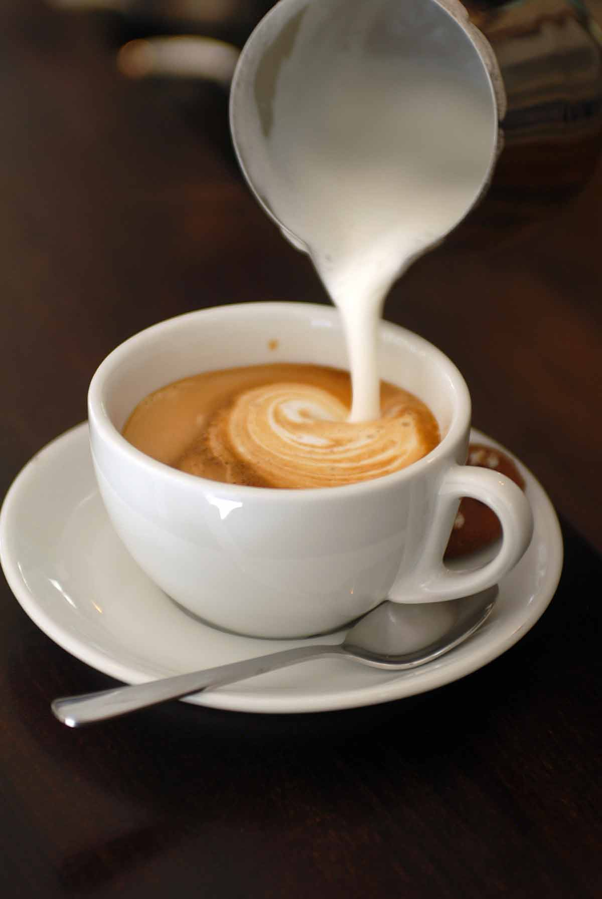
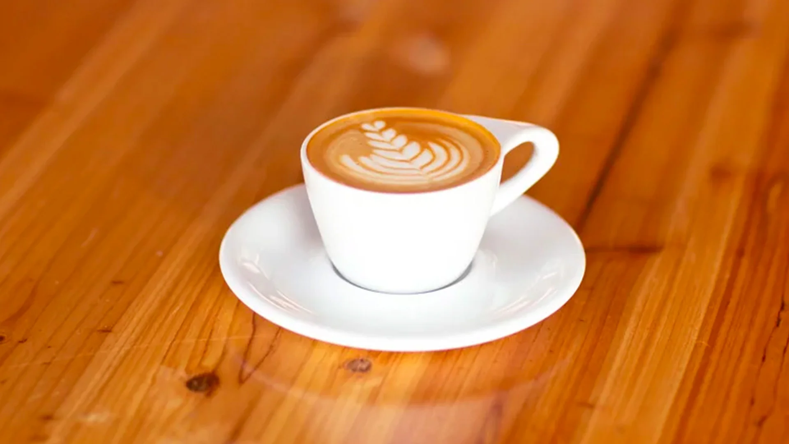
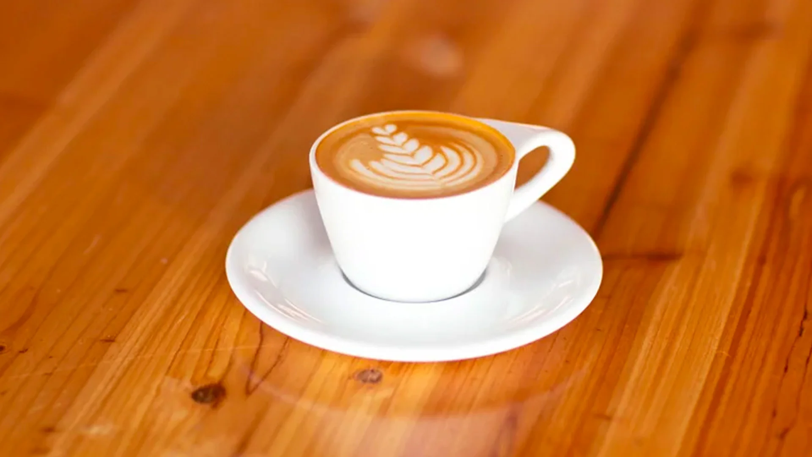
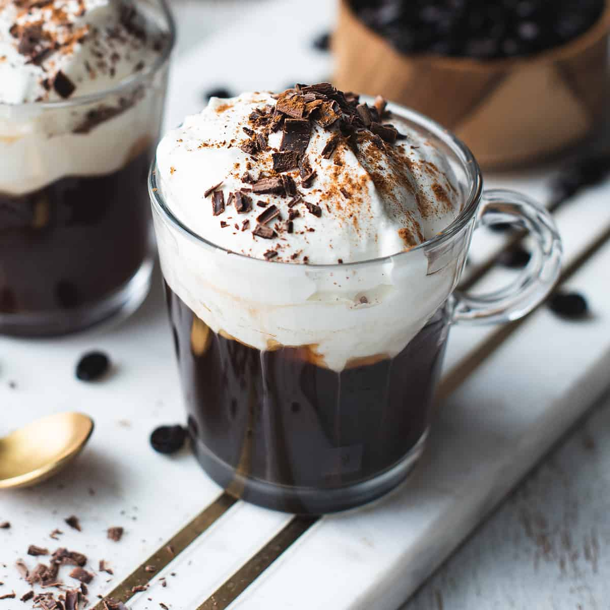
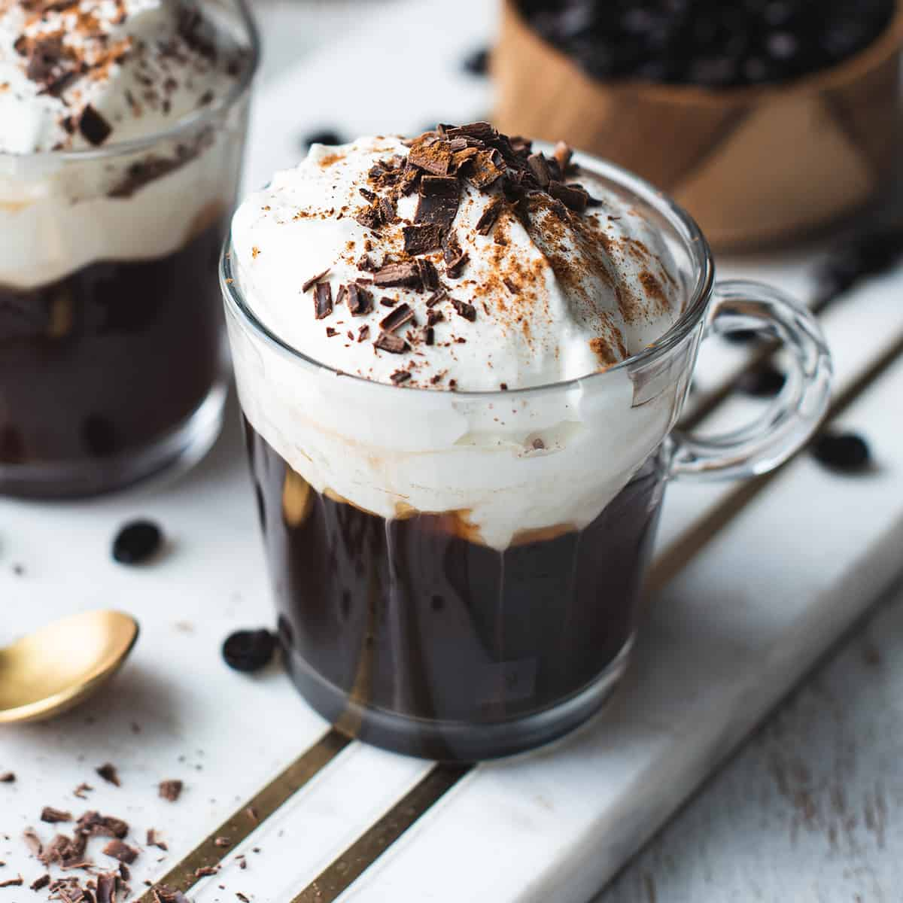

As it’s thought that coffee originated in Ethiopia, it’s also believed it made its way north, across the Red Sea into Yemen in the 15th Century. It then started to be grown here in the Yemeni district of Arabia, and by the 16th century, it was known in Persia, Egypt, Syria, and Turkey.It was immensely popular for its qualities to help improve alertness and wakefulness, allowing people to devote more time to spiritual matters and praying.
The world’s first coffee house was opened in Constantinople in 1475, now known as Istanbul. Coffee was drunk at home as part of the daily routine, as well as to show hospitality to guests. Outside of the home, people visited coffee houses to not only drink coffee but to engage in conversation, listen to music, watch performers, play chess, gossip, and catch up on news. Without the modern technologies we have today, coffee houses quickly became the epicentre for exchanging and gaining information. They were often referred to as “Schools of the Wise.”
And with thousands of pilgrims visiting Mecca each year from all over the world, knowledge of this “wine of Araby”, which it quickly became referred to, began to spread. The founder of the Colony of Virginia, Captain John Smith, introduced coffee to other settlers of Jamestown in 1607. However, it wasn't well received at first, and tea was much more preferred.
In 1670, Dorothy Jones became the first person to receive a license to sell coffee in Boston. By the mid-1700's, many taverns were also dubbed as coffeehouses, but tea was still the drink of choice. It was only when a rebellion against Great Britain caused all the tea to be thrown into the sea, and it was considered unpatriotic to drink it any longer. Coffee then became increasingly popular.
The New World's hot, tropical weather was seen as a new ideal for the cultivation of coffee, and coffee plantations quickly spread throughout Central America, with their first coffee harvest occurring in 1726.
Types of Coffee
 



 



 

Espresso
A concentrated coffee brewed by forcing hot water through finely-ground coffee beans. It forms the base for various coffee drinks.
Americano
A simple coffee made by diluting a shot of espresso with hot water, resulting in a coffee similar to drip coffee but with a richer flavor.
Cappuccino
Equal parts of espresso, steamed milk, and milk froth, creating a creamy and balanced coffee drink.
Latte
A coffee drink made with espresso and steamed milk, topped with a thin layer of milk froth.
Mocha
A delightful blend of espresso, steamed milk, chocolate syrup, and whipped cream.
Macchiato
An espresso with a small amount of milk or milk froth, giving it a bolder coffee flavor.
Flat-White
Espresso with velvety microfoam milk, creating a smooth and strong coffee taste.
Iced-Coffee
Chilled coffee served over ice, often sweetened and mixed with milk or cream.
Turkish-Coffee
Finely ground coffee boiled with water and sugar, served unfiltered in a small cup with grounds settled at the bottom.
French-Press-coffee
Coarse coffee grounds steeped in hot water, and then pressed to separate the liquid from the grounds.
Drip-coffee
Coffee brewed by slowly dripping water through ground coffee beans in a filter.
Affogato
A dessert consisting of a scoop of vanilla ice cream or gelato "drowned" in a shot of hot espresso.
Irish-coffee
A cocktail made with hot coffee, Irish whiskey, sugar, and topped with whipped cream.